Мне понравился игровой стиль Dark Fantasy: пререндеренная CGI-графика конца 90-х, ночь цвета индиго, свет из конкретных источников. Этот мод переносит его в Ale & Tale Tavern — без правки файлов игры и без изменений геймплея.
в работе · версия 0.7 собрана, проверка в игре впереди
Отправная точка — два коротких ролика .dark.reverie: луна с лицом над замком, гора, которая открывает глаз, светящаяся дорога к замку под спиралью звёзд.
Стиль разобран в двух документах: гайд Neon Dark Fantasy (10 страниц) и исследование визуального языка по двум роликам (26 страниц). Вывод исследования: слова «dark fantasy» мало — под ним уживаются и реалистичный хоррор, и руины, и сказка. Рабочее название точнее — гротескное ретро-CGI-фэнтези.
Ролики — чужие работы, поэтому здесь они описаны словами. Все изображения ниже созданы в проекте или сняты в игре с модом.
Ранняя CGI-материальность
Вещи выглядят собранными из вещества: жирный рельеф, горячие блики, грязь в щелях.
У мира есть лица и взгляд: светила, вывески, входы. Но не у каждого камня — иначе это орнамент.
Постановка
Опора взгляда впереди, главное действие в середине, огромное чудо вдали.
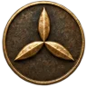
02 · Палитра из гайда
Цвет по ролям
Три слоя: тёмная база, насыщенные материалы и узкий набор светящихся цветов, которые появляются только на источниках света и магии.
Нажми на цвет — HEX скопируется.
База и ночь
Материалы
Свечение — только для источников
≈ 60% тёмная база30% материалы10% свечение
Правило выведено на тестах: если светящегося больше 10%, кадр превращается в кашу и ничего не читается.
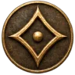
03 · Лаборатория текстур
Ни одного пикселя руками
Каждая текстура — Python-генератор: фрактальный шум, диаграммы Вороного и фальшивое бамп-освещение с горячим бликом дают тот самый «пластиковый» CGI-вид. Все поверхности бесшовные. У светящихся есть отдельная маска свечения — наведи на плитку со значком ◐, чтобы увидеть, что именно светится в игре.
Первая пачка. Реакция после первого просмотра была простой: «это прям оно».
03 · Таверна и мир
Вторая пачка и «грязный» проход
Первая версия второй пачки получилась слишком чистой и «новенькой». Отдельный проход добавил всем материалам грязь: копоть забивается в углубления, пятна и потёки воды, потёртости на выступах, мелкое зерно и лёгкая десатурация.
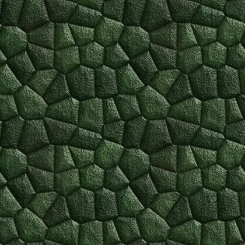
Mossy StoneБугристая моховая кладка
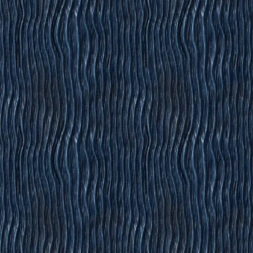
Teal BeamЛакированные балки
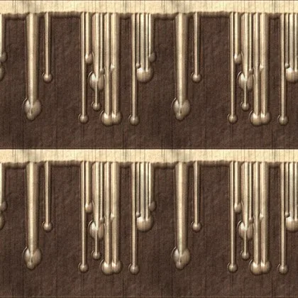
Candle WaxОплывший воск
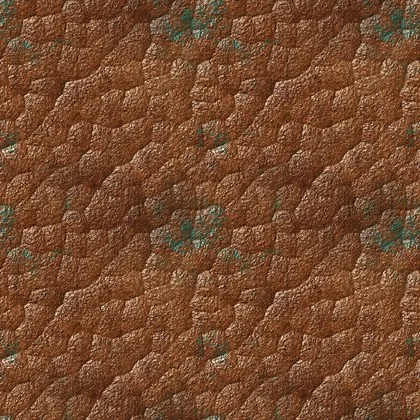
Hammered CopperМедь с патиной
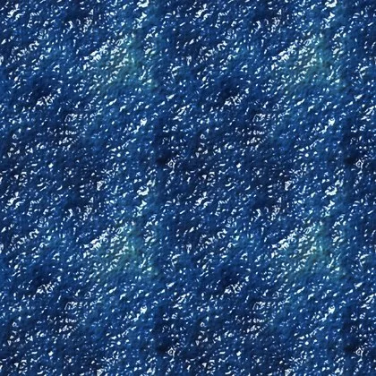
Potion GlassСтекло зелий
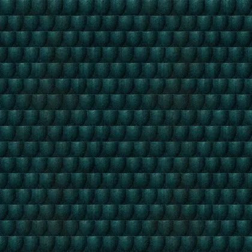
Teal TilesГлазурованная черепица
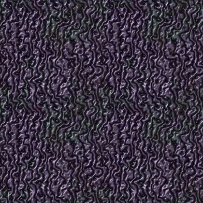
Gnarly BarkКривая фиолетовая кора
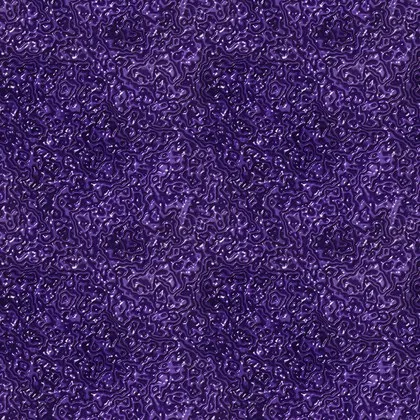
Violet WaterЗеркальная вода
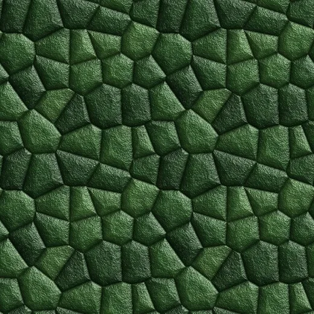
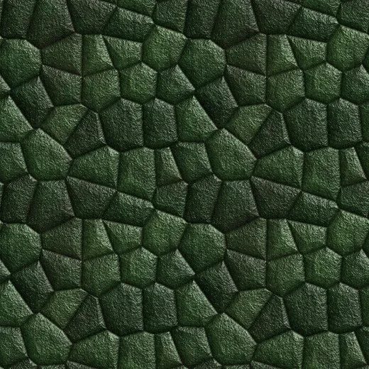
Mossy Stone
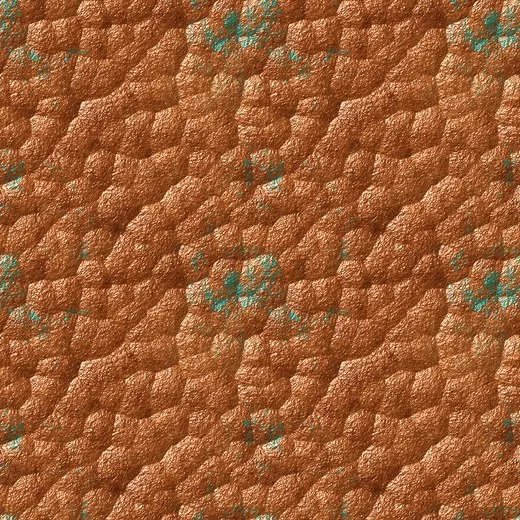
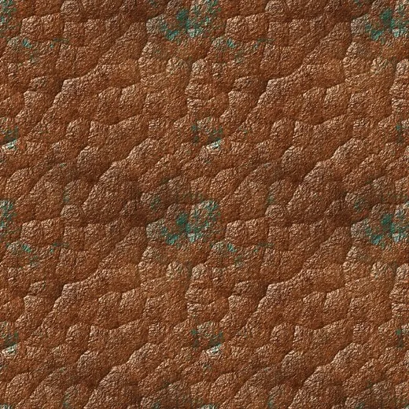
Hammered Copper
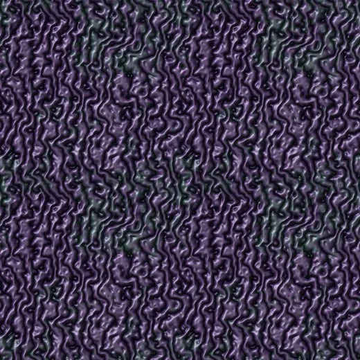
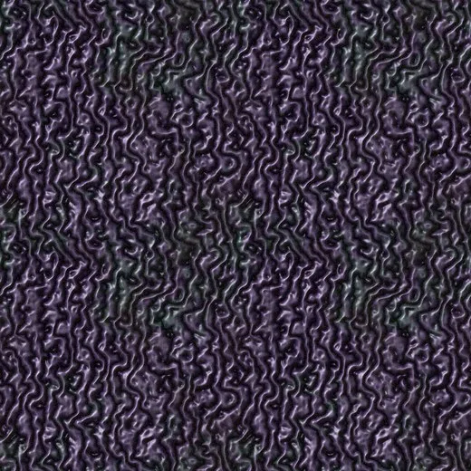
Gnarly Bark
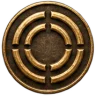
04 · Инженерия
Вскрыть игру, не трогая её файлы
Чтобы рисовать прицельно, нужно знать, из чего собрана игра. Для этого написан плагин-дампер: он ничего не меняет и только читает, какие материалы, текстуры и источники света загружены в каждой сцене.
BepInEx 5
загрузчик модов для Unity-игр на Mono
→
Дампер
CSV материалов, текстур и света по сценам
→
Анализ
шейдеры, слоты, атласы, раскладки
Первая версия дампера подвешивала игру: она сохраняла 3 000 картинок в одном кадре. Версия 1.1 раскладывает сохранение по кадрам, не больше 6 мс за кадр.
Что показал дамп
Unity
2022.3.62 · URP
Сцены
MMH (меню) · Playtest (весь мир)
Материалов в мире
715 из 1 817 загруженных
Текстур
3 275
Источников света
~140, почти все белые
Туман
серый, ExponentialSquared
Шейдеры мира
Polyart Dreamscape · Tiling POM — 187
URP / Lit — 174
Polyart · Surface — 94
Polyart · Trim POM — 83
04 · Перекраска на лету
Атласы нельзя заменить, их можно перекрасить
Столы, бочки, свечи нарисованы атласами: все детали предмета на одной картинке. Бесшовная текстура превратила бы их в кашу. Поэтому мод читает каждую текстуру с видеокарты, по имени определяет, что это (дерево, камень, металл, листва), и переводит её в палитру стиля через градиентную карту. Раскладка атласа сохраняется; около 250 текстур перекрашиваются за первые секунды после загрузки сейва, работа разложена по кадрам.
Оригинал игры → результат перекраски, 12 реальных текстур · нажми, чтобы открыть крупно
04 · Подмена
Было → стало
Двигай ползунок. Слева родные текстуры игры, справа текстуры мода, подключённые по точным игровым именам. Найти эти имена получилось только благодаря дампу: первая попытка подмены промахнулась мимо половины поверхностей.
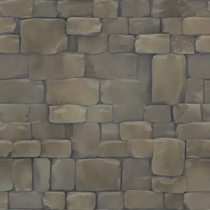
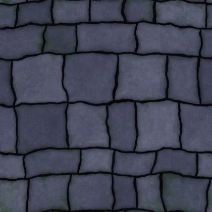
играмод
Каменная кладка · в 0.7 рельефный сланец
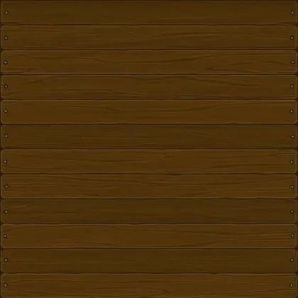
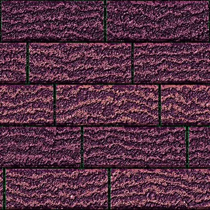
играмод
Деревянный пол · сливовые доски
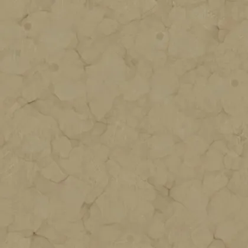
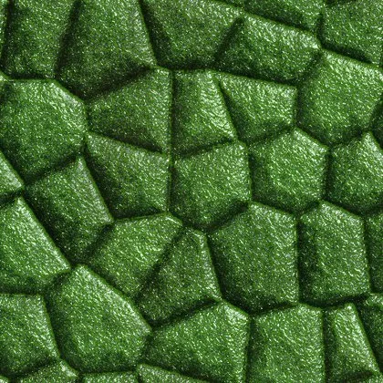
играмод
Штукатурка · мох и зелёные швы
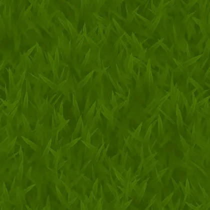
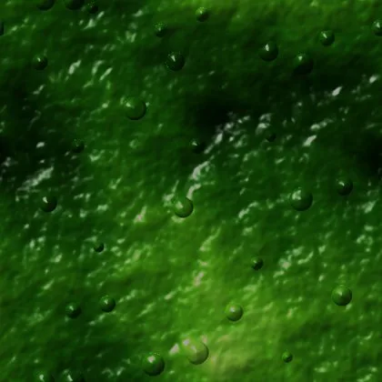
играмод
Луг · тёмная кислотная слизь
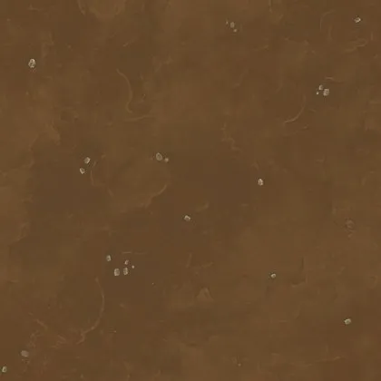
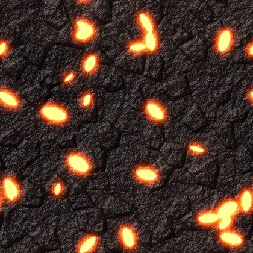
играмод
Земля · тропа из углей
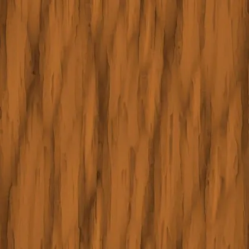
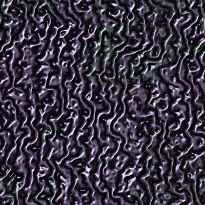
играмод
Кора · корявая фиолетовая
Текстуры игры — собственность Scienart Games, показаны маленькими превью только для сравнения.
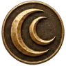
05 · Небо
Небо — главный герой
Солнце и луну нарисовал Трифон. Мод почистил края, добавил ореол и маску свечения. Встроенные диски игры отключены: лица висят в небе всегда и не тонут в тумане у горизонта.
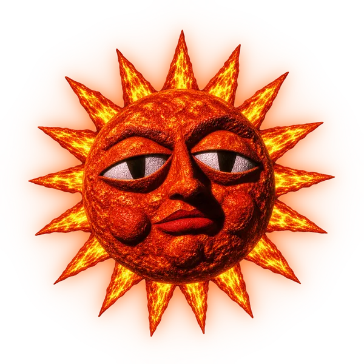
СолнцеОгненные лучи-языки и лава в трещинахЛунаЗвёздная ночь и кратеры, драгоценные зубы, огненный и ледяной глаз
05 · Версия 0.6
Мир, который мод строит сам
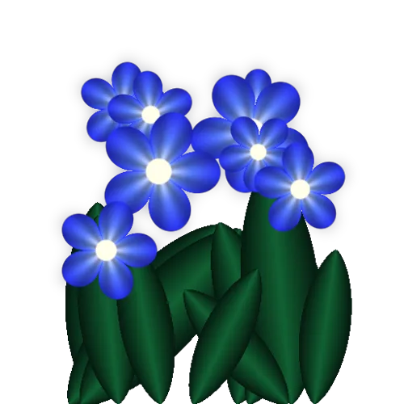
Поля цветов
Родная трава приглушена до 15%. По карте слоёв террейна мод расставляет светящиеся кусты чанками по 16 м вокруг игрока.
Угли на тропах
У террейна нет слота свечения, поэтому угли лежат поверх земли отдельной сеткой с аддитивным блендингом.
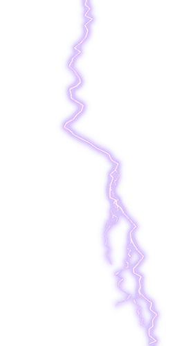
Молнии
Каждые 7–20 секунд ночью: вспышка по рисунку из 8 кадров и короткая подсветка всего мира.
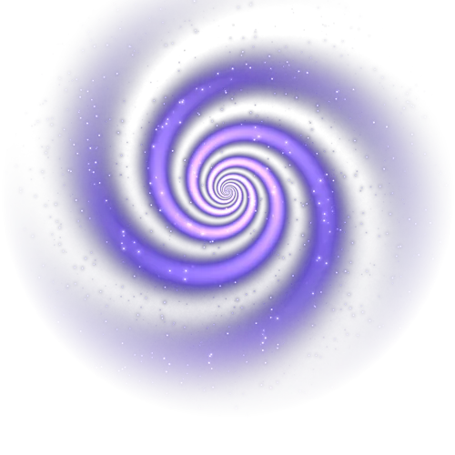
Звёздный вихрь
Медленно вращается над миром, ночью ярче. Облака заменены на грозовые.
float wf = /* вес травы */, we = /* вес песка/грязи */;
if (we > 0.5f) AddFlat (embers, x, y + 0.04f, z, size); // уголь на тропеelse if (wf > 0.45f) AddCross(flowers, x, y, z, size); // крест из двух плоскостей
маска свечения
Тропа из углейЯркость пришлось поднимать дважды: на первом проходе угли терялись
маска свечения
Ковёр синих цветовСамое сильное сияние даёт bloom в игре, поэтому в картинке его нет
06 · Итерации
Семь версий за неделю
Каждая версия — гипотеза, скриншоты из игры и разбор. Ошибки не скрыты: из них сложились правила стиля. Скриншоты открываются крупно по нажатию.
0.1 — первый запуск: красный монохром
Сработало
Текстуры, туман, свет и bloom заработали из одного плагина.
Не сработало
Сливовое дерево, янтарный свет и повышенная насыщенность сложились в одну красную кашу, а улица утонула в сиреневой дымке.
Вывод
Оттенок света нельзя накладывать поверх цветных материалов вслепую.
0.2 — первые свои текстуры
Сработало
Пол с циановыми швами и тропы с углями появились в игре.
Не сработало
Свечение не включалось, часть подмен ушла не по тем именам, постобработка упала с ошибкой.
Вывод
Моддинг без точных имён из дампа — гадание. Отсюда дампер.
0.3 — мир перекрашен целиком
Сработало
Мир впервые выглядит как другая игра: зелёные светящиеся стены, циановый пол в зале, лавовая кухня, тёплые фонари на улице.
Не сработало
Неоновые края на каждой доске и балке. Глаз цепляется за каркас, а не за место.
Вывод
Когда светится всё, ничего не читается. Светиться должны только источники света, магия и тропы.
0.4 — ближе к референсам
Сработало
Свечение только у источников, «хрустящая» фактура, синяя ночь, сплит-тонинг. Пол на кухне стал любимым элементом.
Не сработало
Таверна внутри провалилась в темноту, свечи почти не давали света.
Вывод
Светлее делать за счёт новых источников, а не за счёт приглушения пола.
0.5 — больше огня
Сработало
Свечи ярче, 60 новых тёплых ламп у люстр и подсвечников, вернулись зелёные стены снаружи. Внутри: моховая кладка, циановый пол у ёлки, лавовый у бара.
Не сработало
Угли на тропе просвечивают сквозь синий слой, а не горят; трава и животные остаются чёрными силуэтами; грядки «загораются» с задержкой.
Вывод
Всё это стало списком задач для 0.6.
0.6 — живой мир
Сделано
Цветы вместо травы, угли на тропах, молнии, звёздный вихрь, луна и солнце всегда видны. Синий перебор убран.
Осталось
Атмосфера всё ещё держится на свечении и цветной заливке.
Вывод
Следующий шаг — фактура и направленный свет. Подробно — в разделе «Мир, который мод строит сам».
0.7 — рельеф и направленный свет
Сделано
У материалов три карты: цвет без запечённого света, рельеф и глянец. Эмбиент ниже, луна — холодный ключевой свет, тёплые точки ярче.
Не проверено
Версия собрана, тест четырёх вариантов в игре ещё впереди. Вода не тронута.
Метод
Менять за раз одну группу признаков и записывать конкретную причину улучшения, а не «стало красивее».
Главный поворот. До версии 0.6 атмосферу пытались собрать из свечения и цветной заливки. Итог работы: атмосфера строится на фактуре и направленном свете и должна читаться даже в пустом кадре. Свечение и ожившие предметы — только приправа.
07 · Свет
Что светится, а что нет
Светится
фонари, свечи, люстры, факелы, окна
угли, лава, огонь
руны, кристаллы, зелья, порталы
цветы и грибы
глаза, лица луны и солнца, молнии
Только освещено
дерево: балки, мебель, бочки
камень, кладка, черепица, кора
ткань, кожа, металл, посуда
трава и листва
персонажи и животные — лёгкая самоподсветка, чтобы не уходить в черноту
Что делает мод
перекрашивает туман и эмбиент с учётом времени суток
свечи светят ярче в 3,5 раза и дальше
до 60 тёплых ламп у люстр и подсвечников
bloom, контраст, сплит-тонинг: тени синие, света тёплые
F10 — сравнение «до / после»
Значения стиля из гайда
Параметр
Значение
Комментарий
Эмбиент ночью
0.42, 0.40, 0.56
Светлая лавандовая ночь
Эмбиент днём
0.74, 0.70, 0.84
Прохладный сиреневый день
Цвет тумана
0.20, 0.07, 0.32
Royal Violet, плотность ниже обычной
Лунный свет
0.82, 0.76, 1.0 × 2.2
Почти белый с лавандой
Свечи
1.0, 0.68, 0.38 × 3.5
Тёплый янтарь, увеличенный радиус
Bloom
0.9 · порог 1.0
Только яркие источники
Контраст / насыщенность
+22 / +12
Сочно, но не кислотно
Сплит-тонинг
тени 0.55, 0.50, 1
Холодные тени, тёплые света
Исследование отдельно оговаривает: это сохранённые настройки конкретного подхода, а не универсальные эталонные значения для любой сцены.
08 · Версия 0.7
Один свет — разный рисунок бликов
Раньше свет и блики были нарисованы прямо в картинке, поэтому настоящий свет игры ложился на камень и дерево одинаково плоско. В 0.7 у каждого материала три карты: цвет без запечённого света, рельеф и глянец. Камень — крупная неровная кладка, глубокие швы, короткие блики на выступах. Дерево — длинное текучее волокно и потёртый лак.
Камень
Дерево
Тест пустого угла
Четыре варианта с одной камеры: угол таверны, где видно стену, балку и пол. Мод запоминает исходное состояние материалов и переключает его на лету, без перезапуска; режим подписывается в углу экрана, чтобы скриншоты не перепутались.
Вариант
Текстуры · F6
Свет · F7
A
0.6
0.6
B
0.7 рельеф
0.6
C
0.6
0.7 направленный
D
0.7 рельеф
0.7 направленный
Что исследование советует проверять первым
отношения в кадре: главный объект, тихий фон, направление взгляда
материальность: у камня, дерева и ткани разный масштаб детали и блик
одна смысловая странность вместо глаз на каждом камне
связь источника с миром: цвет котла повторяется на ближайшей поверхности
движение и эффекты — только после того, как кадр читается сам
09 · Правила, выведенные на тестах
Делай / не делай
Делай
Строй атмосферу фактурой и направленным светом: пустой кадр тоже должен работать
Свети только источниками, магией и важными тропами
Делай ночь синей и читаемой, а не чёрной
Держи пару «холодный мир + тёплые огни»
Освещай помещения множеством мелких тёплых источников
Давай камню, дереву и металлу разный рельеф и глянец
Внутри — тёплый янтарь, снаружи — зелёное сияние стен
Оставляй небу лица, грозы и вихри
Не делай
Неоновые обводки на досках и мебели
Свечение всего подряд: глаз теряет главное
Монохромную заливку, которая съедает цвета материалов
Чёрные силуэты травы, людей и животных
Свет и блики, нарисованные прямо в текстуре
Сплошной красный интерьер
Пустое плоское небо
Bloom с низким порогом, заливающий пол-экрана
09 · Дальше
Что впереди
I.Довести мод
Разобрать тест четырёх вариантов, вода с вытянутыми сиреневыми отражениями, одна доминанта у входа в таверну, своя музыка в главном меню.
II.Ожившие предметы
Как приправа к атмосфере: луна и солнце изредка моргают, вывеска таверны приоткрывает глаз.
III.Стиль за пределами игры
Брендбук стиля, 2D и 3D живые обои, интерактивный 3D-фон для сайта, бесплатный пак ассетов в эстетике Neon Dark Fantasy.
PDF · кейс
Полный кейс одним файлом
24 страницы: концепция, палитра, текстуры, инженерия, все версии со скриншотами и правила. Облегчённая версия для экрана, 2,7 МБ.